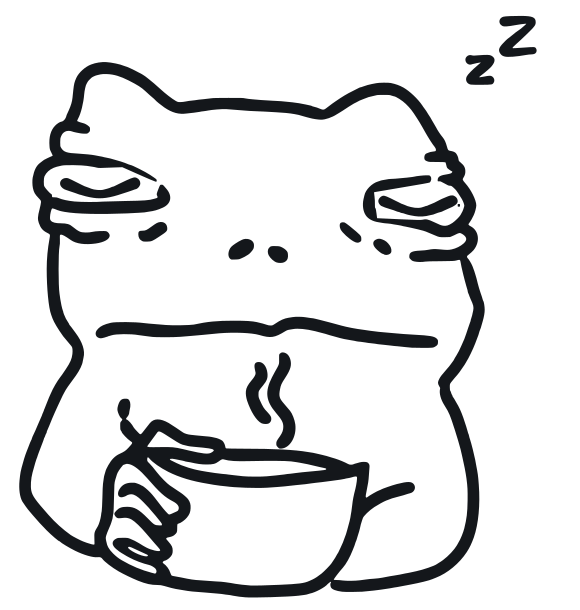

ya pasó
ya pasóqué pasa en geacofi

por ahora no hay eventos anunciados Seguinos en Instagram y te enterás primero. seguir a @geacofiya pasaron
ya pasó ya pasó
ya pasó
por ahora no hay eventos anunciados Seguinos en Instagram y te enterás primero. seguir a @geacofiya pasóya pasó